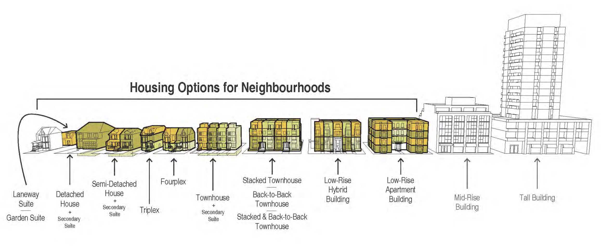

Expanding Housing Options in Neighbourhoods (EHON)
Expanding Housing Options in Neighbourhoods (EHON) is a City of Toronto initiative aimed at addressing the housing needs of our growing city by increasing the availability of low-rise housing in residential areas which is also in keeping with the City of Toronto's Official Plan vision to eliminate disparities, prioritize climate action, and to become the world’s most inclusive city. The initiative seeks to expand housing choices by allowing for the construction of various "missing middle" housing types, including laneway/garden suites, duplexes, fourplexes and low-rise walk-up apartments. While these housing options exist in certain areas of Toronto, their construction is currently limited. This initiative is part of the City's broader efforts to enhance housing diversity, accessibility, and equity, contributing to a more sustainable and inclusive city.
Council has prioritized several projects for advancement, including:
• Allowing accessory housing such as garden suites and coach houses
• Permitting additional residential units like duplexes, triplexes, and fourplexes in areas where they are currently not permitted but are compatible with existing houses
• Implementing zoning changes to enable more low-rise housing options along major streets
• Implementing the Beaches East York Pilot Project
What is Driving the Expansion of Housing Options in Toronto's Neighborhoods?
Despite the prevalence of multiplex housing in various parts of Toronto, approximately 70% of the city's residential zoning only permits the construction of single-detached homes, along with secondary, laneway, and garden suites where applicable. This limitation on housing options has prompted the Expanding Housing Options in Neighborhoods project, which seeks to introduce "missing middle" housing choices in Toronto's low-rise neighborhoods.
By gradually incorporating multiplexes into the city's growth patterns, several key objectives can be addressed, including sustainability, climate adaptation, equity, and neighborhood vitality. Multiplexes offer a viable solution by providing new low-rise, ground-related housing options throughout Toronto. These options can help meet the projected demand for 42,000 low-rise homes while stabilizing population levels in neighborhoods experiencing decline.
Furthermore, multiplexes cater to the needs of larger families and households, allowing residents to age in place within their existing neighborhoods. This approach also ensures that housing remains accessible to existing amenities such as parks, shopping centers, schools, and community centers, enhancing the overall livability and convenience for residents.
How are Multiplexes Defined in Toronto?
Multiplexes have been a staple of Toronto's housing landscape for more than a hundred years. In Toronto, multiplexes are defined as residential buildings that consist of multiple self-contained dwelling units within a single structure. In another word, multiplexes are defined as a low-rise form of housing with two, three, or four units in a single building. These units can be independent apartments or suites, typically with separate entrances and utilities, providing housing options for multiple households within the same building. Multiplexes in Toronto can vary in size, design, and configuration, ranging from converted single-family homes to purpose-built structures specifically designed to accommodate multiple units. They offer an alternative to traditional single-detached homes and contribute to the diversity of housing options available in the city.
EHON Approval & Upcoming Changes
After undergoing comprehensive evaluation and discussion at the Planning and Housing Committee on April 27, 2023, EHON (Expanding Housing Options in Neighbourhoods) had additional amendments incorporated. Subsequently, the measure received official approval from the City Council on May 10, 2023, following the incorporation of amendments during the deliberations. As a result, the following upcoming changes will be implemented:
• Permitting Duplexes, Triplexes, and Fourplexes: These multi-unit buildings are now allowed in all neighbourhoods, enabling up to four units within the primary residential structure. Additionally, where existing regulations permit, the inclusion of Garden Suites and Laneway Suites could potentially add a fifth unit.
• Flexible Form-Based Zoning: Previous restrictions on multiplexes have been revised to align with standards set for single-detached homes. To encourage the construction of additional units, more flexible regulations have been introduced, including increased building depth permissions on deep lots and the removal of floor space index (FSI) regulations. However, the form and design of multiplex housing are still regulated by requirements such as maximum building height, depth, length, width, setbacks, landscaped open space, driveway width, and lot coverage.
• Allowing Three-Storey: Multiplexes are now permitted to have at least three stories citywide. Height limitations for multiplexes have been revised to allow for greater flexibility in building design. While there is no specific storey limit, the height of multiplexes is regulated by maximum height in meters, with a cap of 10 meters unless higher limits already apply. In some cases, a fourth storey may be achievable if permitted by height regulations.
The goal of these initiatives is to foster a diverse range of housing options throughout Toronto, with a focus on promoting increased density, flexibility, and affordability in neighbourhoods across the city. You will find additional reports and information here: Item PH3.16 Expanding Housing Options in Neighbourhoods: Multiplex Study - Final Report.
To confirm your property's eligibility for a multiplex as part of EHON initiative, you can take advantage of our Free EHON Multiplexes Review. Simply contact us with your property's address or survey, and our dedicated team will provide you with a recommendation promptly. This will give you a clear understanding of the potential for a multiplex on your property, without the need for a site visit.